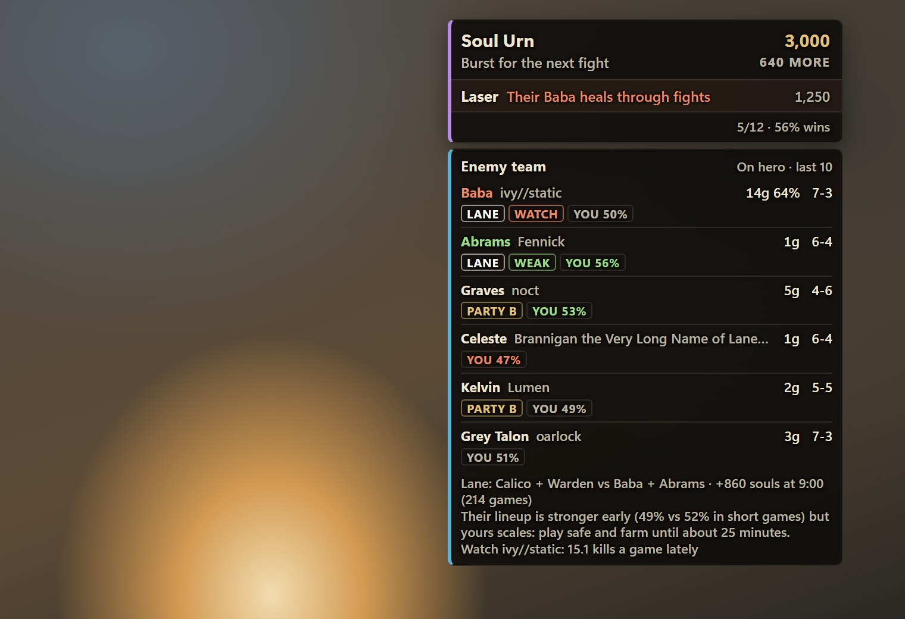
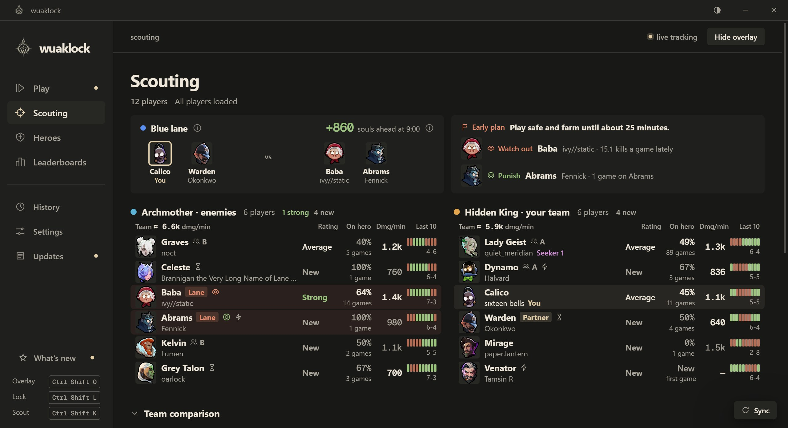
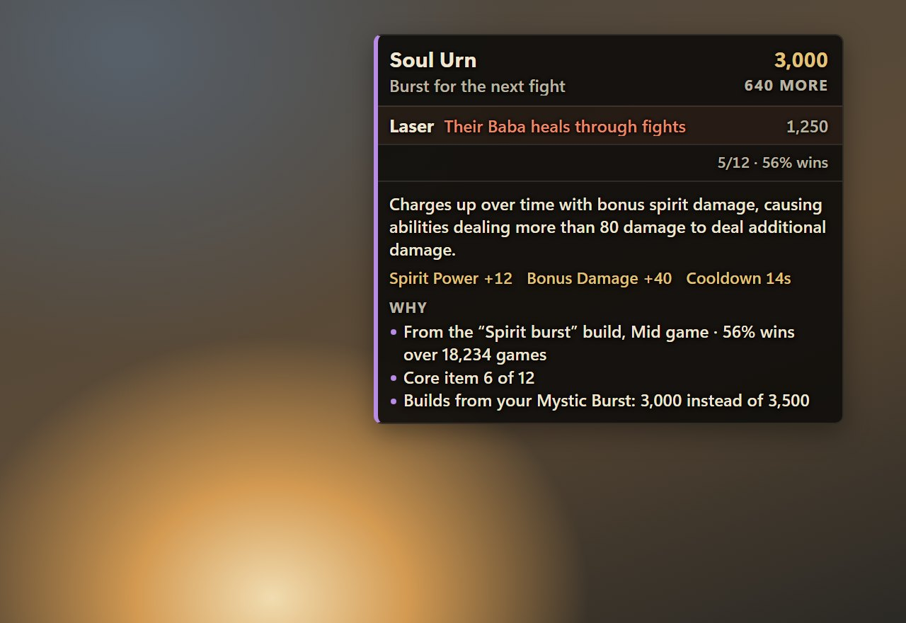
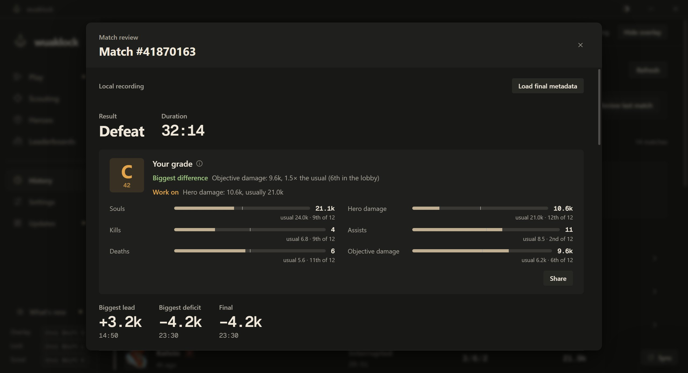
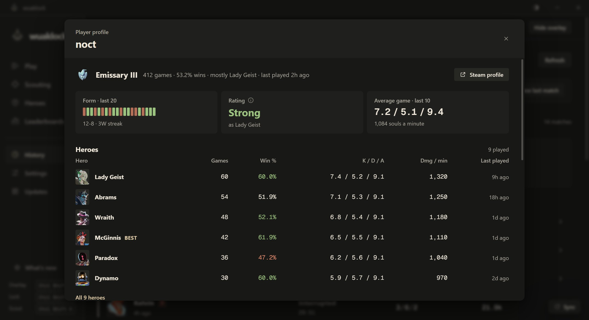

Your next item, over the game
A small card shows the next buy from the best-winning build for your hero, plus a counter item when the enemy team calls for one. Lock it and clicks pass straight through.

WuakLock sits next to the game. It suggests your next item while you play, shows who you're up against while the match loads, and grades how you did afterwards.

A small card shows the next buy from the best-winning build for your hero, plus a counter item when the enemy team calls for one. Lock it and clicks pass straight through.

Open the shop and hover the suggestion to see what the item does, its key stats, which build it comes from and how often that build wins.

S to F, measured against players on the same hero in games of a similar length. You get your biggest strength and the one thing most worth working on.

Look up any player: form over their last 20 games, a rating, every hero they play and a grade for each recent match. Including you.

Scouting, grades, profiles and the leaderboard use public match data from the independent community Deadlock API. Every screenshot uses sample data.
Join with Steam and you're ranked by your average WuakLock grade over your last 20 matches, overall and per hero. Scores come from public match data, so they can't be edited or faked.
Joining is optional. Your Steam name and scores are shown publicly, and leaving deletes your entry.
Get the zip (always the newest version) and unzip it anywhere. Older versions and release notes are on GitHub.
Run Wuaklock.exe, then go to Settings › Install on this PC. That adds Start menu and desktop shortcuts, and it updates itself from then on.
Start Deadlock in borderless or windowed mode. Your hero, the lobby and your next buy are picked up automatically.
No. It's free, with no ads and no account required.
WuakLock works like other live Deadlock trackers: it reads match data and never changes the game, injects code or sends input. No third-party tracker can guarantee account safety, WuakLock included. More under Safety and privacy.
Public match lookups go to the community Deadlock API, update checks go to GitHub, and the leaderboard is only contacted if you join it. Your recorded matches never leave your PC. The privacy policy has every detail.
An installed copy checks a few times a day, downloads the new version, verifies its signature and installs it when you close the app. Never during a match.
Windows only for now, because the live features read the Windows game client.
Use Feedback in the app, or open an issue on GitHub. Everything gets read.
Free for Windows 10 and 11.
Download WuakLock